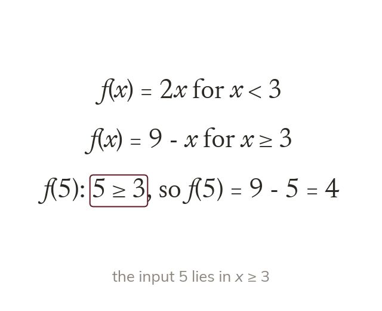
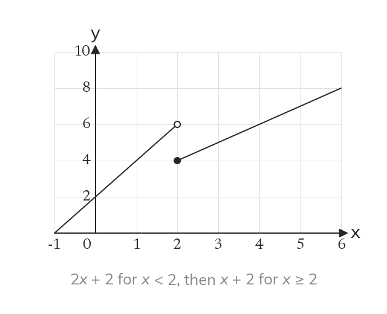
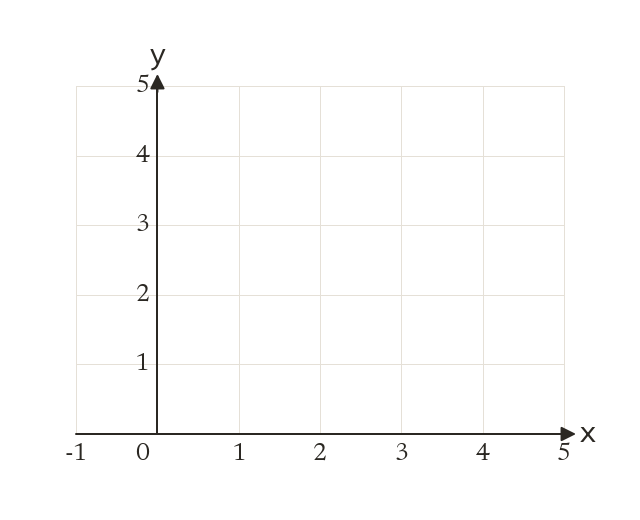
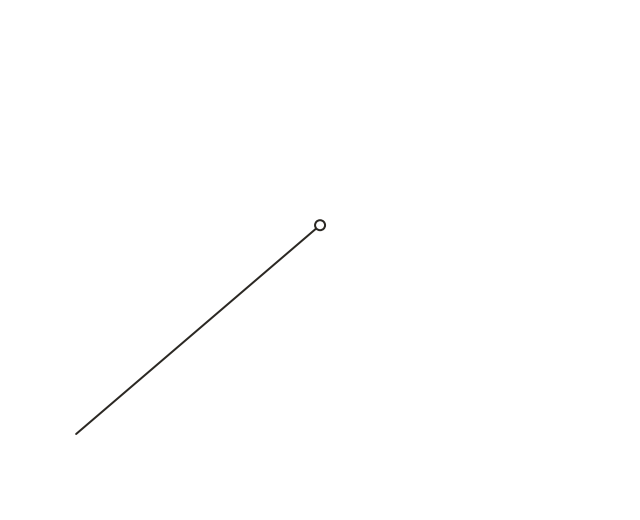
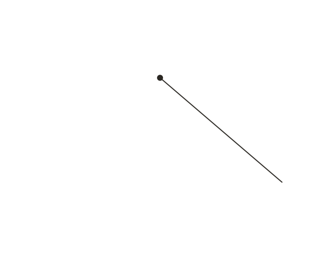
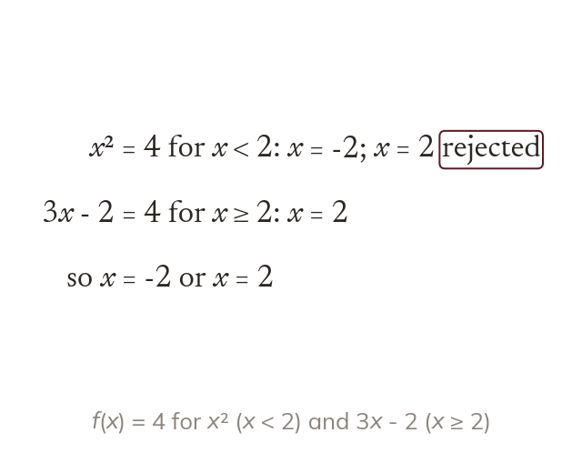
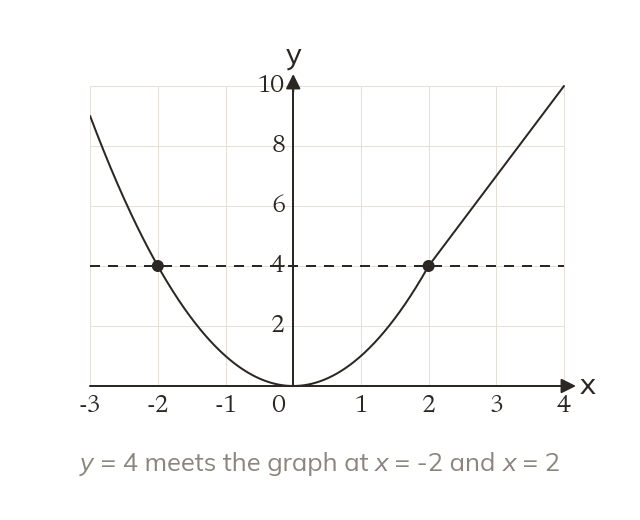

The interval chooses the rule
A piecewise function has a different rule on each interval. The input's interval decides which rule applies.
A taxi charges one rate for the first few miles and another after that: one function, two rules. Today we read, draw and solve functions built from pieces.
Work down the page at your own pace. Write every answer in your book first, then click to check it.
Read each card, then follow the worked examples one step at a time.

A piecewise function has a different rule on each interval. The input's interval decides which rule applies.

Each rule is drawn over its own interval only. An excluded end gets an open circle.



Pick an answer. If it's wrong, the feedback tells you which mistake it was.
Read each card, then follow the worked examples one step at a time.

Each rule can give solutions of f(x) = k. A solution counts only inside its own rule's interval.

A horizontal line y = k meets the graph at every solution. Where it misses a piece, that rule gives none.
Pick an answer. If it's wrong, the feedback tells you which mistake it was.
Finished? Next lesson: 11H.9.5 Composite Functions.
Log in, then search for a code to practise that skill.
Videos, worksheets and more on each part of this lesson.